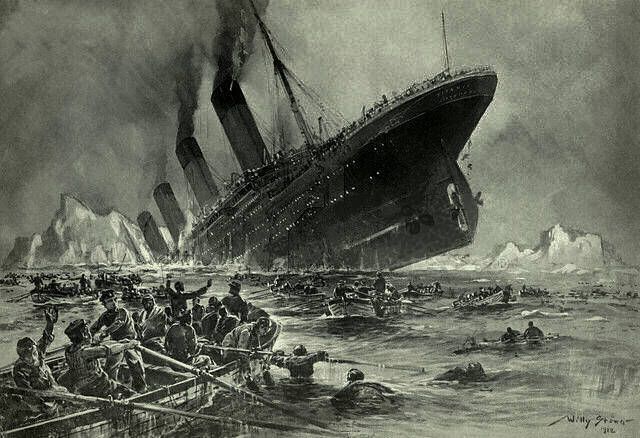

"Humankind seems to teeter between hubris and paranoia: the hubris of our ever-growing power contrasts with the paranoia that we're permanently and increasingly under threat. At the zenith we realise we have to come down again... we know that we have more than we deserve or can defend, so we become nervous. Somebody, something is going to take it all from us: that is the dread of the wealthy. Paranoia leads to defensiveness, and we all end up in the trenches facing each other across the mud.
On a musical level, I wanted to make a record of songs that didn't rely on the normal underpinnings of rhythmic structure and chord progressions but which allowed voices to exist in their own space and time, like events in a landscape. I wanted to place sonic events in a free, open space.
Three-dimensional sound installation of The Ship in Barcelona, 2014
One of the starting points was my fascination with the First World War, that extraordinary trans-cultural madness that arose out of a clash of hubris between empires. It followed immediately after the sinking of the Titanic, which to me is its analogue. The Titanic was the Unsinkable Ship, the apex of human technical power, set to be Man's greatest triumph over nature. The First World War was the war of materiel, 'over by Christmas', set to be the triumph of Will and Steel over humanity. The catastrophic failure of each set the stage for a century of dramatic experiments with the relationships between humans and the worlds they make for themselves.

German infantry on the battlefield, August 7, 1914
I was thinking of those vast dun Belgian fields where the First World War was agonisingly ground out; and the vast deep ocean where the Titanic sank; and how little difference all that human hope and disappointment made to it. They persist and we pass in a cloud of chatter.
Written in the late sixties, Lou Reed's song 'I'm Set Free' seems even more relevant now than it did then. Perhaps anybody who's read Yuval Noah Harari's 'Sapiens' will recognise the quiet irony of "I'm set free to find a new illusion"... and its implication that when we step out of our story we don't step into 'the truth' - whatever that might be - but into another story.
This album is a succession of interleaved stories. Some of them I know, some of them I'm discovering now in the making of them.
Wave. After. Wave. After. Wave."
The Ship
"The piece started as an ambient work intended for a multi channel sound installation in Stockholm, but during the making of it I discovered that I could now sing a low C - which happens to be the root note of the piece. Getting older does have a few fringe benefits after all. From that point the work turned into an unusual kind of song... a type I've never made before where the vocal floats free, untethered to a rhythmic grid of any kind."
The waves about it roll.
And as a globe of powder sand,
We lift, we lose, we haul.
The time is still, the sky is young.
Drawn on to watch the gall.
And we are as the undescribed.
Who take and lose and haul.

RMS Titanic departing Southampton on 10 April 1912
Oh hallelujah pray for me,
The man who turned away.
My desert in a grain of sand,
My life within a day.
So smooth the stones that kept the types,
The piper plays a reed.
But we are as the undefined,
Breaking on the wind.
When pray with time and bent with day,
A frail empire [unintelligible].
The sail is down; the wind is gone.
The sky is black with crow.
A slave to hopes of destiny,
Illusion of control.
And we are as the unrefined,
The waves about us roll.

Untergang der Titanic by Willy Stower, 1912
Malted line.
Cup.
Drain.
Hand.
Turns.
A man.
A man
Turns
Into
A timer.
Sand.
Drag.
Imp.
Glass.
Running.
Wave.
Stretched.
Like them.
The vibration
Of
That pearly
Voice.
Felt.

Titanic survivors in a lifeboat after the sinking, April 1912
As wave
After wave
After wave
After wave
After wave
After wave
After wave
After wave
After wave.

Fickle Sun (i)
We toiled away in fickle sun.
And all the day, the wire is spun.
And so the dismal work is done.
All over Europe, dark and still,
A cumulus of pride and will.
Dissolved in all the oil and steel,
And oil and blood and hopeful schemes.
British troops on the march in Mesopotamia, 1917
The line is long, the line is grey,
And humans turning back to clay.
Right there beneath a fickle sun,
The empty eyes,
The end begun.
Oh, crow is done.
Crow is done.

Troops moving up at eventide by Ernest Brooks, 1917
And now the boats are all astray.
There's no one rowing anyway.
There's no one rowing anymore,
Abandoned far from any shore.
Fighting in Delville Wood by Ed. H.W. Wilson, 1916
All the boys are going down.
Falling over, one by one.
All the boys are turned around.
Come for soldiers, everyone.
All the boys are falling down.
Come to ashes, everyone.
I turned my eyes directly to the sun
To burn off all that I had seen.
To burn, to burn, all I had seen.
To be recast as something new.
When I was a young soldier...
When I was a young soldier...
When I was a young soldier...
German soldier in the Western Front, 1916
And all the way the work is done.
And all the way the wicked sun.
(When I was a young soldier...)
And all the way the wicked sun.
(When I was a young soldier...)
And all the way, the work is done.
(When I was a young soldier...)
And all the way the wicked sun.
(When I was a young soldier...)
And all the way the wicked sun.
(When I was a young soldier...)
And all the way, the work is done.
(When I was a young soldier...)
And all the way, the wicked sun.
All the way, the wicked sun.
When I was a young soldier...
When I was a young soldier...
When I was a young soldier...
When I was a young soldier...
The Battle of the Somme by Ernest Brooks, 1916
Fickle Sun (ii) The Hour is Thin
Trafalgar Square is calm.
Birds, and cold, black dark.
The final famine of a wicked sun,
And the web that died yesterday.
Trafalgar Square by Moonlight by Henry Pether, c. 1865
I was a hard copy version.
I turned my eyes directly to hate.
Then, the hammer of toil.
Tired with what the world has yet brought forth,
With the women waving at war,
And the news that war is faith.
Filled with tremendous cheering, leaping, and night rings.
Ding, dang, and gongs.
Who did not feel any purpose?
Ottoman troops during the Balkan Wars, c. 1913
The phoenix broods serene above the moment.
You are fighting for...
I wonder what destiny.
We waste away our hours and darken.
Beneath the velvet of a strong optimism,
Britain's most fateful hour is spun.
Copy this point on a gong.
Choirs, like bells, like a national truce,
And the new sun,
Where the air is something new.
Men dream of a swell so high,
Endeavor to get through the lies and the bees,
To find something that historians can rake out of the drums,
And all that color and savagery.
Two Curtiss JN-4s ("Jennies") in flight, c. 1918
Boom.
The dark.
And the web that died yesterday.

Halifax Explosion, 1917
The phoenix broods serene above the tower of time.
Not enough boats.
He admitted without shame
That he had entered into the dreams of the named addressee
In the velvet of war.

Well lad, you've taken my heart away.
I shall miss the grin of the cold, black sea.
Before ever there was writing, they were taking up stones
To hurl at last stroke,
But nobody looked back.
There were soldiers,
There was a cradle.
The universe is required.
Please notify the sun.
Fickle Sun (iii) I'm Set Free
"The first time I ever heard [The Velvet Underground] was on a John Peel radio show... it was when their first album came out and I thought, 'this I like, this I want to know about!' I was having a huge crisis at the time. Am I going to be a painter or am I somehow going to get into music. And I couldn't play anything so music was the less obvious choice. Then, when I heard The Velvet Underground I thought, 'you can do both actually.' It was a big moment for me.
Brian Eno, 1968
That particular song always resonated with me but it took about 25 years before I thought about the lyrics. 'I'm set free, to find a new illusion'. Wow. That's saying we don't go from an illusion to reality (the western idea of 'finding the truth') but rather we go from one workable solution to another more workable solution.
Subsequently I think we aren't able and actually don't particularly care about the truth, whatever that might be. What we care about is having intellectual tools and inventions that work. [Yuval Noah Harari in his book 'Sapiens'] discusses that what makes large-scale human societies capable of cohering and co-operating is the stories they share together. Democracy is a story, religion is a story, money is a story. This chimed well with 'I'm set free to find a new illusion'. It seems to me what we don't need now is people that come out waving their hands and claiming they know the Right Way."
To the memories of yesterday's clouds.
I've been set free and I've been bound,
And now I'm set free.
I'm set free.
I'm set free to find a new illusion.
I've been blinded but
Now I can see
What in the world has happened to me:
The prince of stories who walked right by me,
And now I'm set free.
I'm set free.
I'm set free to find a new illusion.
I've been set free and I've been bound.
Let me tell you people
What I have found.
I saw my head laughing,
Rolling on the ground,
And now I'm set free.
I'm set free.
I'm set free to find a new illusion.